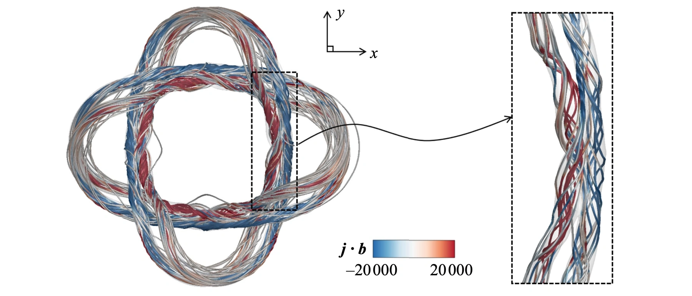

A curved magnetic flux tube in a conducting fluid does not simply stay as it is. The Lorentz force acting on curved field generates a counter-rotating vortex dipole, and that dipole can tear the tube into smaller structures — a mechanism relevant wherever magnetic structures fragment and release energy.
导电流体中的一根弯曲磁通管并不会安然保持原样。作用在弯曲磁场上的洛伦兹力会生成一对反向旋转的涡偶极子，而这个偶极子可以把磁管撕裂成更小的结构——在任何磁结构发生碎裂并释放能量的地方，这个机制都值得关注。
The clean version of this problem is a magnetic tube alone. Real flows are rarely clean: a magnetic structure in a turbulent conducting fluid sits alongside vortical structures, and the two interact through the same velocity field. Whether the splitting mechanism survives that company is a separate question.
这个问题的干净版本是：只有一根磁管。真实的流动很少这么干净：湍流导电流体中的磁结构总是与涡结构并存，而两者通过同一个速度场相互作用。分裂机制能否在这样的陪伴下存活，是一个独立的问题。
This study asks it with direct numerical simulations of linked magnetic and vortex tubes, varying their initial relative angle from zero to 45 degrees. The answer is conditional and interesting: a sufficiently strong accompanying vortex tube disrupts dipole formation and inhibits splitting.
本研究用相互链接的磁管与涡管的直接数值模拟来问这个问题，并把它们的初始相对夹角从 0 度变到 45 度。答案是带条件的，也很有意思：足够强的伴随涡管会破坏偶极子的形成，从而抑制分裂。
A curved magnetic tube generates a Lorentz force and a vortex dipole that can split it into smaller structures — self-induced splitting requiring no external flow.
弯曲的磁管会产生洛伦兹力与涡偶极子，后者可将其分裂成更小的结构——这是一种不需要任何外部流动的自我诱导式分裂。
The analysis uses a Frenet–Serret frame along field lines, so curvature and torsion give a local language for the forces that bend and separate a tube, and the induced dipole becomes part of the mechanism rather than a flow visualisation.
分析沿磁力线使用 Frenet–Serret 标架，于是曲率与挠率为“使磁管弯曲、分离的力”提供了局部语言；被诱导出的偶极子由此成为机制的一部分，而不只是一种流动可视化。
Direct numerical simulations of linked magnetic and vortex tubes at initial angles from 0 to 45 degrees show that a sufficiently strong accompanying vortex can disrupt dipole formation and inhibit splitting, with sensitivity to small changes in angular configuration.
对相互链接的磁管与涡管的直接数值模拟（初始夹角 0 到 45 度）表明：足够强的伴随涡旋可以破坏偶极子的形成并抑制分裂，且结果对小幅改变角度很敏感。
A frame that follows the field line一个跟着磁力线走的标架
The Frenet–Serret frame attaches a tangent, normal and binormal direction to every point of a curve. Applied to a magnetic field line it converts the geometry of that line — its curvature and torsion — into local coordinates for whatever force acts on it.
Frenet–Serret 标架为曲线上每一点附上切向、法向与副法向三个方向。把它用在磁力线上，就把这条线的几何——曲率与挠率——转换成了作用在其上的任何力的局部坐标。
This matters because the Lorentz force depends on the field’s own geometry. Curvature determines the direction and magnitude of the magnetic tension force, so expressing the dynamics in the field’s own frame makes the force decomposition readable instead of leaving it buried in components.
这一点很关键，因为洛伦兹力依赖于磁场自身的几何。曲率决定了磁张力力的方向与大小，因此在磁场自己的标架中表达动力学，能让力的分解变得可读，而不是埋在分量里。
In that description the vortex dipole is not a separate observation to be correlated with splitting after the fact. It is the flow response to the tension force, and therefore part of the mechanism — which is why anything that alters the local rotational flow should change whether splitting happens at all.
在这个描述下，涡偶极子不再是一个事后拿来与分裂做关联的独立观测。它是流动对张力力的响应，因而是机制的一部分——这正是为什么任何改变局部旋转流动的因素，都应当改变分裂到底会不会发生。


Varying the configuration改变构型
The simulations combine an analytical force decomposition with direct numerical simulation of linked magnetic and vortex tubes, varying the initial relative angle from zero to 45 degrees. Field-line geometry, vorticity generation and magnetic-to-kinetic energy transfer are examined together.
这些模拟把解析的力分解与磁管—涡管链接构型的直接数值模拟结合起来，把初始相对夹角从 0 度扫到 45 度，并同时考察磁力线几何、涡量生成以及磁能向动能的转化。
Sweeping the angle is the right control because it separates the two structures without changing either one. At zero the tubes are aligned and the vortex sits where the dipole wants to form; as the angle grows, the imposed rotation is progressively misaligned with the self-induced one.
扫描夹角是正确的控制变量，因为它在不改变两者中任何一个的前提下把它们分离开。夹角为零时，两管对齐，涡旋正好落在偶极子想要形成的位置；夹角增大时，外加的旋转与自我诱导的旋转逐渐错开。
Comparing an isolated magnetic structure with an accompanied one is the other necessary contrast. Without the isolated case you could not tell whether a change in splitting came from the vortex or merely from two structures in a periodic domain evolving differently from one.
另一个必要的对照是把孤立磁结构与有伴随涡的结构作比较。没有孤立算例，就无法判断分裂的变化究竟来自涡旋，还是仅仅来自周期性域中两个结构本来就与单个结构演化得不同。
When the vortex wins当涡旋占据上风
The isolated magnetic tube behaves as expected. Curvature drives a Lorentz force, the force drives a dipole, and the dipole splits the tube into smaller structures while magnetic energy is converted into kinetic energy.
孤立的磁管表现得符合预期：曲率驱动洛伦兹力，洛伦兹力驱动偶极子，偶极子把磁管分裂成更小的结构，同时磁能被转化为动能。
With a sufficiently strong accompanying vortex tube the outcome changes. The imposed rotational flow disrupts dipole formation before it can organise, and splitting is inhibited rather than merely delayed — the mechanism is interrupted upstream of the step that produces it.
当伴随涡管足够强时，结果就变了。外加的旋转流动在偶极子组织起来之前就破坏了它的形成，分裂被抑制而不仅仅是被推迟——机制在产生它的那一步之前就被截断了。
The simulations also show sensitivity to small changes in angular configuration, and that sensitivity is worth reading carefully. A mechanism that depends on how two structures are oriented is one whose outcome in a turbulent flow cannot be predicted from local geometry alone.
模拟还显示出对角度小幅改变的敏感性，而这种敏感性值得仔细读。一个依赖于两个结构如何取向的机制，其在一个湍流流动中的结果，就无法仅由局部几何预测出来。
From local forces to structural evolution从局部的力到结构的演化
The result connects a local geometric description — curvature, torsion and the forces they generate — to a visible change in topology and energy release. That chain is the useful part: it explains why a tube splits rather than only recording that it did.
这个结果把一种局部的几何描述——曲率、挠率以及它们生成的力——与拓扑和能量释放上的可见变化连接起来。这条因果链才是有用的部分：它解释了磁管为什么分裂，而不只是记录下它分裂了。
It also argues against treating a magnetic tube independently of its surroundings. In a conducting fluid, magnetic and vortical structures are coupled, and a prediction based on the magnetic structure alone can be qualitatively wrong — here, in the direction of over-predicting fragmentation.
它同时也反对把磁管孤立于其周围环境来处理。在导电流体中，磁结构与涡结构是耦合的，仅基于磁结构做出的预测可能是定性错误的——在这里，错误方向是过高估计碎裂程度。
The scope is idealised. These are clean numerical configurations with prescribed initial geometry, chosen to isolate one mechanism. The paper offers a basis for interpreting more complex magnetohydrodynamic flows, not a direct prediction for any particular astrophysical or laboratory configuration.
适用范围是理想化的。这些是带有给定初始几何的干净数值构型，目的是分离出某一个机制。论文提供的是解释更复杂磁流体流动的出发点，而不是对任何具体天体或实验室构型的直接预测。
Paper & authors
Effects of magnetic–vortical interactions on magnetic splitting
J. Fluid Mech.
Cite this work
@article{Kang_2025,
title = {Effects of magnetic–vortical interactions on magnetic splitting},
volume = {1009},
ISSN = {1469-7645},
url = {http://dx.doi.org/10.1017/jfm.2025.263},
DOI = {10.1017/jfm.2025.263},
journal = {Journal of Fluid Mechanics},
publisher = {Cambridge University Press (CUP)},
author = {Kang, Linlin
and Wang, Yanru
and Jiang, Zhongzheng
and Hao, Jinhua
and Xiong, Shiying
and Fan, Dixia
and Cui, Weicheng},
year = {2025},
month = Apr
}